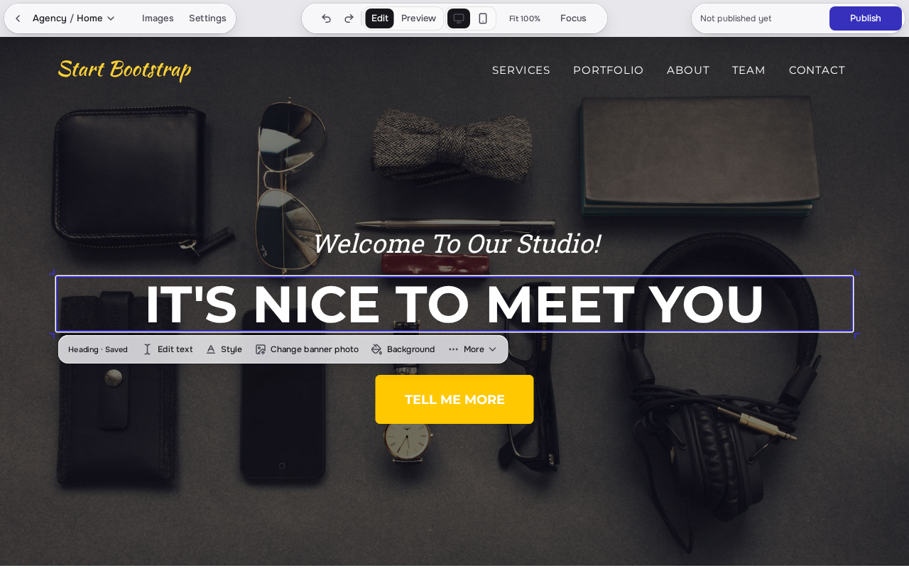
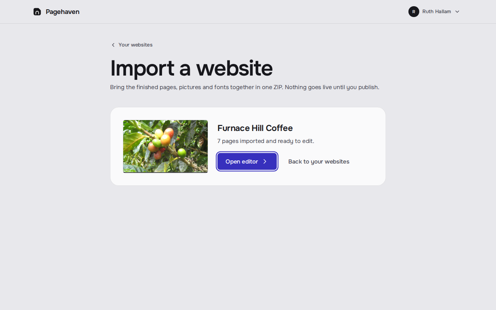
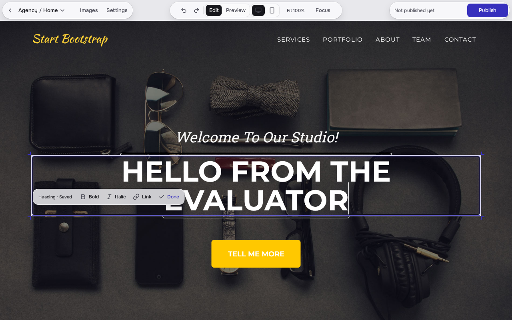
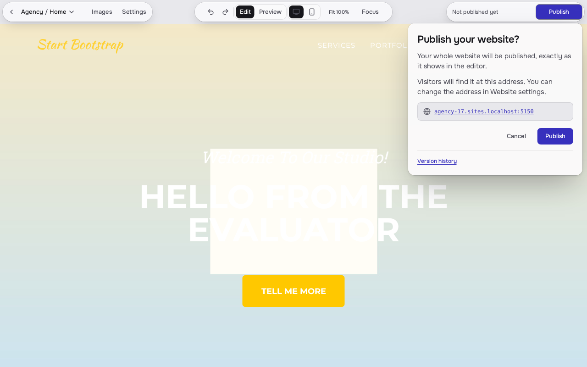
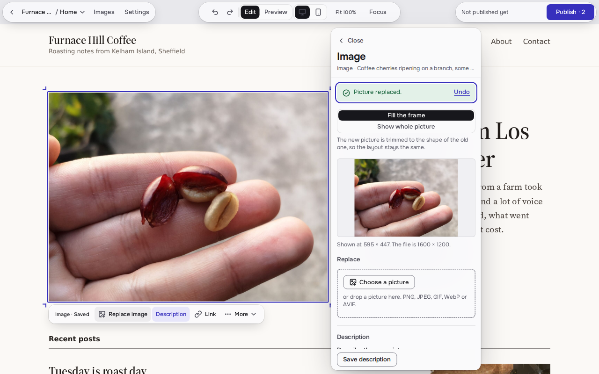

Keeps the shipped identity: Onest, Haven Ultramarine #3730BD and the glass levels. The boldness comes from composition. The selection ring the owner sees in the editor becomes the brand mark: the headline is drawn as a selected heading. Ultramarine stops being a button colour and owns one whole region, the stage the real product sits on.
1. Homepage hero
Import the ZIP your AI tool exported. Click any heading, photo or link to change it, then publish to your own address. No code, and no more prompts for small changes.

Furnace Hill Coffee, a seven-page site, imported and open for editing.Real screenshot of the editor. No mock-up.
2. How it works
Drop the folder your AI tool exported. Pagehaven checks it is a finished static site and tells you what it left out.

Click a heading and type. Click a photo to replace it. Every change saves as a draft, and Undo is always one press away.

See the list of changes, then publish to your address. Earlier versions stay in history.

3. Editor chrome

On a phone the shipped editor moves every tool into one opaque bottom bar with 44 px targets, shown here as built. The shipped three-capsule bar, tightened to 44 px capsules. The publish capsule carries the one piece of colour in the chrome besides the selection. The state words say what is not live yet, so saving and publishing stay separate.